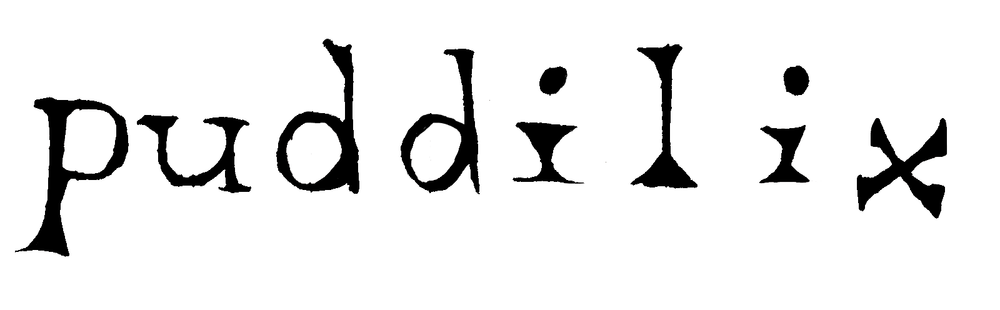
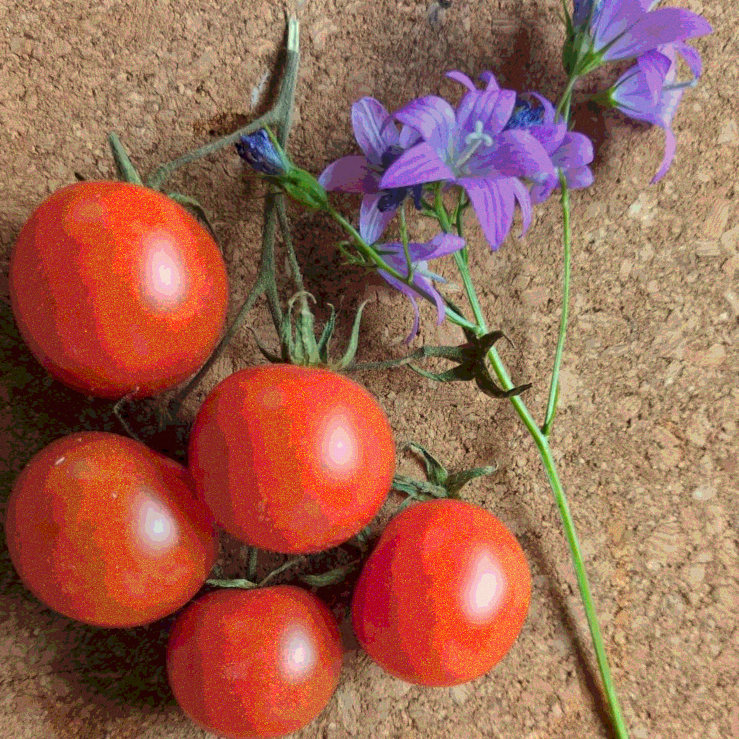
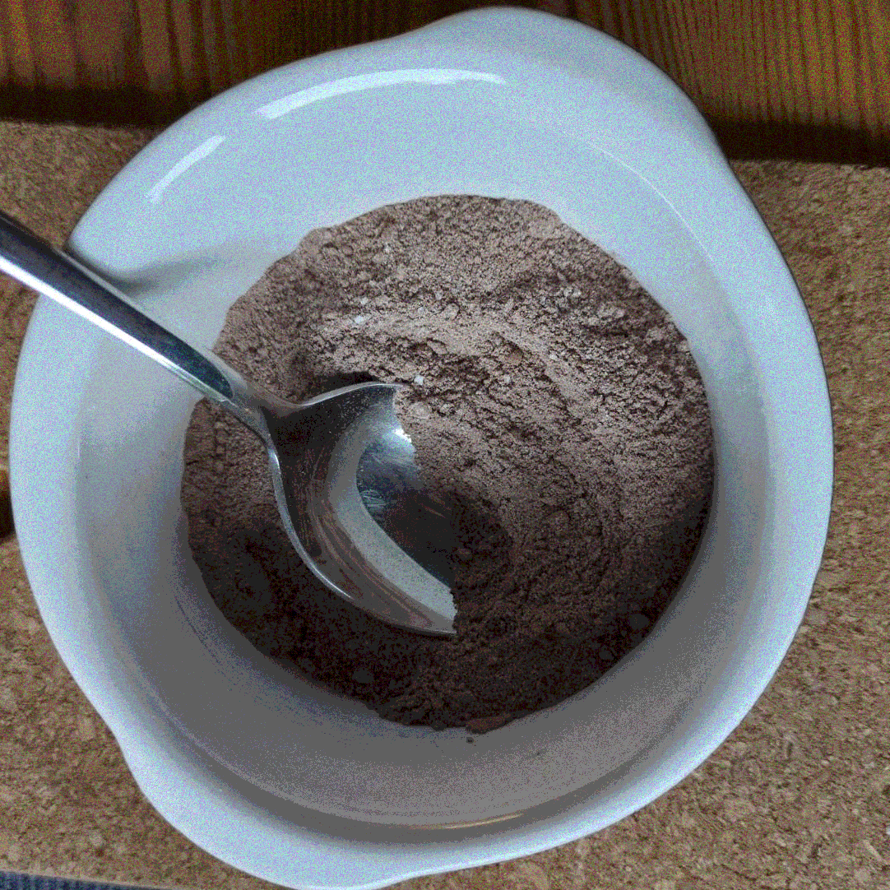
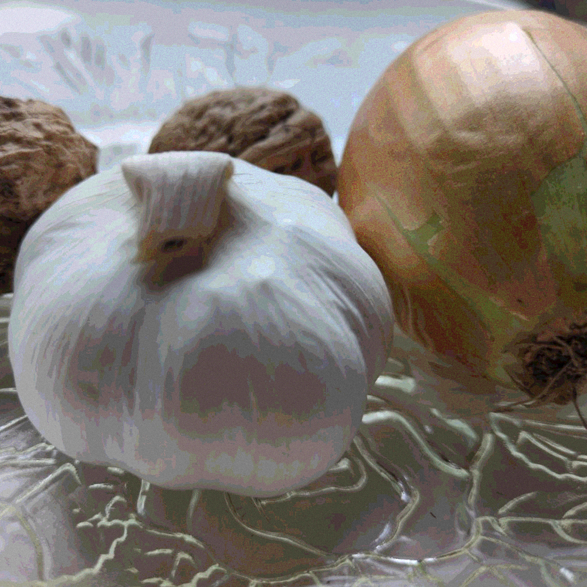

Cozy Corner for Culinary Adventures



About Us
Alle unsere Marken entsprechen der Nizza-Kategorie 9.
Unsere Bildmarke
Farbe des Hintergrundes: Hex-Wert f9c999
Dieses Icon verwenden wir als Desktop-Icon- bzw. App-Symbol für unsere Software.Der "Fuzzy"-Effekt soll Assoziationen mit Linoldruck hervorrufen.
Unsere Wortbildmarke - "Puddilix"
Das Wortbild besteht aus einer Mono-Serifen-Schrift und soll mit Monospace Assoziationen mit der digitalen Welt erzeugen, mit den Serifen physische Rezeptbücher und die Verspieltheit von den Designs historischer Ex Libris aufgreifen.
Unser Muster
Wir haben ein Muster als Marke, das sich in den Vorlagen der Rezepte in der App befindet und bei Nutzung unserer Programme stark präsent ist.
Features
Puddilix ist der Ort, an dem Sie alle Ihre Rezepte speichern können. Ein Foto des Rezept-Textes konvertiert die App automatisch in eine Textdatei, die mit dem Foto abgespeichert wird. Auch andere Datenformate können importiert werden. Oder Sie schreiben das Rezept einfach direkt in der Anwendung. Ist das Rezept einmal in der App, können Sie es mit Tags versehen, die wir Ihnen auch automatisch vorschlagen können, es in Ordnern sortieren oder einfach dort belassen.
Finden
Sie haben Gemüse im Kühlschrank und möchten ein Rezept kochen, das Sie schon länger nicht mehr verwendet haben? Mit Puddilix kein Problem! Sie können nach Tag, Zutaten, Kochzeit, letztem Kochdatum, Kultur und vielen weiteren Parametern filtern.
Gestaltung
Wir bieten mehrere Formatvorlagen, die Sie individuell anpassen können. Ob Sie ein eigenes Exlibris gestalten oder sich nur aufs Kochen konzentrieren wollen - wenn Sie cozy Design mögen, wird die App Ihnen gefallen.
Tagebuch
Sie können die Rezept-Texte beliebig abändern, es in Reviews und mit Sternen bewerten und mit unserem Kalender auf vergangene Koch-Abenteuer zurückblicken. All das passiert lokal auf Ihrem Gerät.
Grenzenlose Mobilität
Sie können die Dateien in alle gängige Dateiformate (PDF, Markdown, HTML, PNG, ...) exportieren und die App leicht mit der Cloud oder Syncthing synchronisieren.